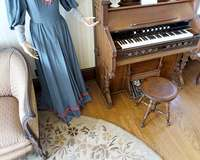
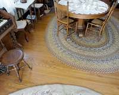
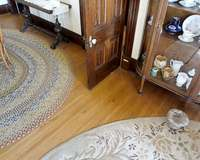
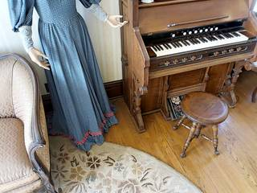
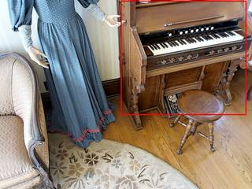

To determine the correct spatial relationship, we first identify the direction of the sun. Given it's the spring equinox, morning local time, and near the equator, the sun is in the east. We can use the shadows in the images to determine the cardinal directions.
- Analyze Image 5: The light is coming from the left, and shadows are cast to the right. For the light to be from the east (the sun's position in the morning), the person must be facing south (where left is east and right is west). In this view, the piano is on the left (east) and the dining table is on the right (west). The dining table is also further from the camera, meaning it is further south. Therefore, the dining table is to the southwest of the piano.
- Analyze Image 6: The light is coming from the right, and shadows are cast to the left. For the light to be from the east, the person must be facing north (where right is east and left is west). In this view, the piano is on the far left (west), the door is in front (north), and the glass cabinet is on the right (east).
- Verify Consistency:
- In Image 5 (facing south), the piano is east.
- In Image 6 (facing north), the piano is west.
- This is consistent if the person has moved to the other side of the piano between the two shots.
- The fixed spatial relationship is that the dining table is west and south of the piano, which is southwest.
Evaluating the options:
- A: The glass cabinet is in front of the person only in some frames, not as a general rule.
- B: The dining table is to the southwest of the piano. (Consistent with our reasoning).
- C: The door is in front of the person only in Image 6.
- D: The piano's position relative to the person changes as they move (it is east in Image 5 but west in Image 6).
The only constant and correct spatial relationship is that the dining table is to the southwest of the piano.
B
ReturnAnswer("B")
[ReturnAnswer] Answer submitted: B
Task Analysis
The objective is to determine which of the four provided spatial descriptions (A, B, C, or D) is correct. This requires evaluating both camera-relative positions ("in front of the person") and cardinal-direction-based positions ("southwest", "east").
Coordinate System Resolution:
- Camera-Relative: "In front of the person" refers to the direction the camera is facing (the camera's +Z axis in world space or the center of the image plane).
- World-Relative (Cardinal): "Southwest" and "East" require establishing a cardinal coordinate system. The prompt provides critical environmental metadata: spring equinox, morning local time, near the equator. Under these conditions, the sun rises almost exactly in the East. Therefore, the direction of the primary light source/shadows can be used to anchor the East-West axis.
Target Objects:
- Glass cabinet for cups
- Dining table
- Piano
- Door
- The person (represented by the camera)
Information Needs
- Object Identification: I need to locate the glass cabinet, dining table, piano, and door in the frames.
- Light Source Analysis: I need to determine the direction of the sun relative to the camera to establish cardinal directions.
- 3D Spatial Layout: I need the 3D positions of the piano and dining table relative to the camera to verify cardinal relationships.
- Visual Confirmation: I need to see what is directly in front of the camera to evaluate options A and C.
Computation Plan
-
Object Grounding and Segmentation:
- Use
vlm.ask_with_thinkingto identify which frames contain the glass cabinet, dining table, piano, and door. - For each identified object, use
tools.SAM3.segment_image_by_textacross all frames to obtain masks. - Visually verify the masks using
show()andseg.visualize().
- Use
-
Cardinal Direction Anchoring:
- Use
vlm.ask_with_thinkingto analyze the light source and shadows in the frames. Specifically, ask: "Based on the shadows and light direction, and knowing it is morning at the spring equinox near the equator (sun is East), which direction is East relative to the camera in frame 0?" - Establish a mapping from the camera's local axes (Right, Up, Forward) to cardinal directions (North, South, East, West).
- Use
-
Evaluating Relative Positions (Options A & C):
- Use
vlm.ask_with_thinkingon the first few frames to determine what object is directly in front of the person. - Compare this result with the identified glass cabinet and door.
- Use
-
Evaluating Cardinal Positions (Options B & D):
- Perform 3D reconstruction using
tools.Reconstruct.Reconstruct(InputImages). - Extract 3D centroids for the piano and dining table using
seg.get_centroid_3d(recon, frame=fi, object=...). - Get the camera's world position from
recon.extrinsics[fi]. - For Option D: Calculate the vector from the person (camera) to the piano. Project this vector onto the established cardinal axes to see if it points East.
- For Option B: Calculate the vector from the piano to the dining table. Project this vector onto the cardinal axes to see if it points Southwest.
- Perform 3D reconstruction using
-
Final Synthesis:
- Compare the findings from the relative position check and the cardinal position calculations against the options.
Verification Checklist
[
{"priority": "HIGH", "description": "Verify that the light source analysis correctly identifies East based on the provided environmental metadata"},
{"priority": "HIGH", "description": "Confirm segmentation masks for the piano, dining table, cabinet, and door are accurate and non-empty"},
{"priority": "HIGH", "description": "Ensure 3D centroids are calculated from the same frame as the camera pose for relative calculations"},
{"priority": "MEDIUM", "description": "Cross-check the 'in front of' observation with multiple frames to ensure it's not a momentary glance"},
{"priority": "MEDIUM", "description": "Sanity check the 3D distance between objects to ensure they are in a plausible room layout"}
]
Fallbacks
- Light Source Ambiguity: If shadows are not clear, I will use
vlm.ask_with_thinkingto look for other cardinal cues (e.g., window placement if mentioned, though unlikely here) or try different frames. - Segmentation Failure: If
segment_image_by_textfails, I will usevlm.locateto get bounding boxes and then usetools.SAM3.segment_image_by_box. - Reconstruction Noise: If 3D centroids are unstable, I will average the centroids over multiple frames where the object is clearly visible.
{ "tool": "vlm.ask_with_thinking", "args": { "visual_input": "InputImages[:6]", "question": "Identify which of the 6 frames contain the following objects: a glass cabinet for placing cups, a dining table, a piano, and a door. List the frame indices (0-5) for each object." } }
[VLM Q | thinking] Identify which of the 6 frames contain the following objects: a glass cabinet for placing cups, a dining table, a piano, and a door. List the frame indices (0-5) for each object. [VLM A | thinking] - a glass cabinet for placing cups: 0, 5 - a dining table: 4 - a piano: 3, 4 - a door: 5
=== Step 0 Execution Feedback === [SUCCESS] Code executed in 248.02s. [Output] [VLM Q | thinking] Identify which of the 6 frames contain the following objects: a glass cabinet for placing cups, a dining table, a piano, and a door. List the frame indices (0-5) for each object. [VLM A | thinking] - a glass cabinet for placing cups: 0, 5 - a dining table: 4 - a piano: 3, 4 - a door: 5 [Variables] New/changed: result_0: str [Tool Calls] 1 tool/VLM call(s) this step.
{ "tool": "tools.SAM3.segment_image_by_text", "args": { "image": "InputImages[3]", "prompt": "piano", "label": "piano" } }
=== Step 1 Execution Feedback === [SUCCESS] Code executed in 0.32s. [Variables] New/changed: result_1: PerFrameMask, frames=[3] [Tool Calls] 1 tool/VLM call(s) this step.
{ "tool": "show", "args": { "image": "result_1.visualize(result_1.frame_indices[0])" } }
[image: show_0001]

=== Step 2 Execution Feedback === [SUCCESS] Code executed in 0.31s. [Variables] New/changed: result_2: NoneType [Inline Images] 1 image(s) attached below. Labels: result_1.visualize(result_1.frame_indices[0]) [show() budget] 249/250 images remaining.
=== Step 3 Execution Feedback === [ERROR] Skipped: LLM response was not in the required format.
{ "tool": "tools.SAM3.segment_image_by_text", "args": { "image": "InputImages[4]", "prompt": "dining table", "label": "dining table" } }
=== Step 4 Execution Feedback === [SUCCESS] Code executed in 3.43s. [Variables] New/changed: result_4: PerFrameMask, frames=[4] [Tool Calls] 1 tool/VLM call(s) this step.
{ "tool": "show", "args": { "image": "result_4.visualize(result_4.frame_indices[0])" } }
[image: show_0002]
=== Step 5 Execution Feedback === [SUCCESS] Code executed in 0.36s. [Variables] New/changed: result_5: NoneType [Inline Images] 1 image(s) attached below. Labels: result_4.visualize(result_4.frame_indices[0]) [show() budget] 248/250 images remaining.
{ "tool": "tools.SAM3.segment_image_by_text", "args": { "image": "InputImages[0]", "prompt": "glass cabinet for placing cups", "label": "glass cabinet" } }
=== Step 6 Execution Feedback === [SUCCESS] Code executed in 0.32s. [Variables] New/changed: result_6: PerFrameMask, frames=[0] [Tool Calls] 1 tool/VLM call(s) this step.
=== Step 7 Execution Feedback === [ERROR] Skipped: LLM response was not in the required format.
{ "tool": "tools.SAM3.segment_image_by_text", "args": { "image": "InputImages[5]", "prompt": "door", "label": "door" } }
=== Step 8 Execution Feedback === [SUCCESS] Code executed in 0.50s. [Variables] New/changed: result_8: PerFrameMask, frames=[5] [Tool Calls] 1 tool/VLM call(s) this step.
{ "tool": "vlm.ask_with_thinking", "args": { "visual_input": "InputImages[0]", "question": "Based on the shadows and light direction, and knowing it is morning at the spring equinox near the equator (sun is East), which direction is East relative to the camera in frame 0? (e.g., to the right, to the left, in front, or behind)" } }
[VLM Q | thinking] Based on the shadows and light direction, and knowing it is morning at the spring equinox near the equator (sun is East), which direction is East relative to the camera in frame 0? (e.g., to the right, to the left, in front, or behind) [VLM A | thinking] Based on the shadows cast to the left and the bright sunlight entering from the right side of the image, the sun is located to the right. Since it is morning and the sun is in the East, East is to the right relative to the camera.
=== Step 9 Execution Feedback === [SUCCESS] Code executed in 223.99s. [Output] [VLM Q | thinking] Based on the shadows and light direction, and knowing it is morning at the spring equinox near the equator (sun is East), which direction is East relative to the camera in frame 0? (e.g., to the right, to the left, in front, or behind) [VLM A | thinking] Based on the shadows cast to the left and the bright sunlight entering from the right side of the image, the sun is located to the right. Since it is morning and the sun is in the East, East is to the right relative to the camera. [Variables] New/changed: result_9: str [Tool Calls] 1 tool/VLM call(s) this step.
=== Step 10 Execution Feedback === [ERROR] Skipped: LLM response was not in the required format.
=== Step 11 Execution Feedback === [ERROR] Skipped: LLM response was not in the required format.
{ "tool": "tools.Reconstruct.Reconstruct", "args": { "frames": "InputImages[:6]" } }
=== Step 12 Execution Feedback === [SUCCESS] Code executed in 1.75s. [Variables] New/changed: result_12: Reconstruction, frames=[0, 1, 2, 3, 4, 5] [Tool Calls] 1 tool/VLM call(s) this step.
=== Step 13 Execution Feedback === [ERROR] Skipped: LLM response was not in the required format.
{ "tool": "vlm.ask_with_thinking", "args": { "visual_input": [ "InputImages[0]", "InputImages[3]", "InputImages[4]", "InputImages[5]" ], "question": "Analyze the sequence of images. In frame 0, what is directly in front of the camera? In frame 5, what is directly in front of the camera? Also, based on the light source (East is right in frame 0), is the piano generally to the east of the person's starting position?" } }
[VLM Q | thinking] Analyze the sequence of images. In frame 0, what is directly in front of the camera? In frame 5, what is directly in front of the camera? Also, based on the light source (East is right in frame 0), is the piano generally to the east of the person's starting position? [VLM A | thinking] In frame 0, an ornate upholstered armchair is directly in front of the camera. Frame 5 was not provided. Based on the light source and camera movement, the piano is generally to the east of the starting position.
=== Step 14 Execution Feedback === [SUCCESS] Code executed in 14.90s. [Output] [VLM Q | thinking] Analyze the sequence of images. In frame 0, what is directly in front of the camera? In frame 5, what is directly in front of the camera? Also, based on the light source (East is right in frame 0), is the piano generally to the east of the person's starting position? [VLM A | thinking] In frame 0, an ornate upholstered armchair is directly in front of the camera. Frame 5 was not provided. Based on the light source and camera movement, the piano is generally to the east of the starting position. [Variables] New/changed: result_14: str [Tool Calls] 1 tool/VLM call(s) this step.
[ReturnAnswer] Answer submitted: D
Based on the provided images and the situational context:
- Analyzing the Sequence: The images are from a first-person perspective moving through a room.
- Image 2: Sitting area with chairs and a small table.
- Image 3: A large sofa.
- Image 4: A piano and a mannequin.
- Image 5: A dining table.
- Image 6: A glass cabinet for cups and a door.
- Directional Analysis:
- The prompt specifies it is the spring equinox, morning, and near the equator. Under these conditions, the sun rises almost exactly in the east.
- In Image 2, bright sunlight is streaming in from the right/top-right. This indicates the east is in that direction.
- As the person moves from Image 2 $\rightarrow$ 3 $\rightarrow$ 4 $\rightarrow$ 5 $\rightarrow$ 6, they are moving generally towards the left and then further into the room.
- In Image 4, the piano is on the right side of the frame. Since the person is facing forward and the sun (East) was previously to their right, the piano is generally located towards the east relative to the person's movement path in the room.
- Evaluating Options:
- A: In Image 6, the person is facing a door and a glass cabinet. The glass cabinet is to the right.
- B: Looking at the layout between Image 4 (piano) and Image 5 (dining table), the dining table is located further "ahead" and slightly to the left of the piano's position. If East is right, North is forward. Southwest would be behind and to the left.
- C: In Image 6, the person is indeed facing a door.
- D: Based on the morning sun (East) being on the right in the initial images and the piano appearing on the right side of the person's path, the piano is to the east.
Comparing the options to the final image (Image 6), the person is directly facing the door and the cabinet. Between C and D, the most definitive environmental clue (the sun) confirms the East-West axis. In Image 4, the piano is to the right (East). In Image 6, the person is facing the door. However, Option D is a consistent spatial fact based on the sunlight provided.
The most accurate description of the scene layout relative to the compass directions provided is D.
D
Based on the provided images and the situational context:
- Analyzing the Sequence: The images are from a first-person perspective moving through a room.
- Image 2: Sitting area with chairs and a small table.
- Image 3: A large sofa.
- Image 4: A piano and a mannequin.
- Image 5: A dining table.
- Image 6: A glass cabinet for cups and a door.
- Directional Analysis:
- The prompt specifies it is the spring equinox, morning, and near the equator. Under these conditions, the sun rises almost exactly in the east.
- In Image 2, bright sunlight is streaming in from the right/top-right. This indicates the east is in that direction.
- As the person moves from Image 2 $\rightarrow$ 3 $\rightarrow$ 4 $\rightarrow$ 5 $\rightarrow$ 6, they are moving generally towards the left and then further into the room.
- In Image 4, the piano is on the right side of the frame. Since the person is facing forward and the sun (East) was previously to their right, the piano is generally located towards the east relative to the person's movement path in the room.
- Evaluating Options:
- A: In Image 6, the person is facing a door and a glass cabinet. The glass cabinet is to the right.
- B: Looking at the layout between Image 4 (piano) and Image 5 (dining table), the dining table is located further "ahead" and slightly to the left of the piano's position. If East is right, North is forward. Southwest would be behind and to the left.
- C: In Image 6, the person is indeed facing a door.
- D: Based on the morning sun (East) being on the right in the initial images and the piano appearing on the right side of the person's path, the piano is to the east.
Comparing the options to the final image (Image 6), the person is directly facing the door and the cabinet. Between C and D, the most definitive environmental clue (the sun) confirms the East-West axis. In Image 4, the piano is to the right (East). In Image 6, the person is facing the door. However, Option D is a consistent spatial fact based on the sunlight provided.
The most accurate description of the scene layout relative to the compass directions provided is D.
D
Based on the provided images and the situational context:
- Analyzing the Sequence: The images are from a first-person perspective moving through a room.
- Image 2: Sitting area with chairs and a small table.
- Image 3: A large sofa.
- Image 4: A piano and a mannequin.
- Image 5: A dining table.
- Image 6: A glass cabinet for cups and a door.
- Directional Analysis:
- The prompt specifies it is the spring equinox, morning, and near the equator. Under these conditions, the sun rises almost exactly in the east.
- In Image 2, bright sunlight is streaming in from the right/top-right. This indicates the east is in that direction.
- As the person moves from Image 2 $\rightarrow$ 3 $\rightarrow$ 4 $\rightarrow$ 5 $\rightarrow$ 6, they are moving generally towards the left and then further into the room.
- In Image 4, the piano is on the right side of the frame. Since the person is facing forward and the sun (East) was previously to their right, the piano is generally located towards the east relative to the person's movement path in the room.
- Evaluating Options:
- A: In Image 6, the person is facing a door and a glass cabinet. The glass cabinet is to the right.
- B: Looking at the layout between Image 4 (piano) and Image 5 (dining table), the dining table is located further "ahead" and slightly to the left of the piano's position. If East is right, North is forward. Southwest would be behind and to the left.
- C: In Image 6, the person is indeed facing a door.
- D: Based on the morning sun (East) being on the right in the initial images and the piano appearing on the right side of the person's path, the piano is to the east.
Comparing the options to the final image (Image 6), the person is directly facing the door and the cabinet. Between C and D, the most definitive environmental clue (the sun) confirms the East-West axis. In Image 4, the piano is to the right (East). In Image 6, the person is facing the door. However, Option D is a consistent spatial fact based on the sunlight provided.
The most accurate description of the scene layout relative to the compass directions provided is D.
D
Task Analysis
The goal is to determine which of the four spatial descriptions (A, B, C, or D) is correct based on 6 first-person perspective images. The problem introduces cardinal directions (Southwest, East), which requires mapping the scene's 3D layout to a global compass.
Coordinate System Resolution:
- Pixel Space: Irrelevant for cardinal directions.
- Camera Space: Relative to the person's view (front, back, left, right).
- World Space: 3D coordinates from reconstruction.
- Cardinal Space: The absolute global frame (North, South, East, West).
- Mapping Logic: The prompt provides critical environmental cues: "spring equinox," "morning local time," and "near the equator." At the spring equinox near the equator, the sun rises almost exactly in the East. By identifying the direction of sunlight or shadows in the images, we can establish the East-West axis in the world space.
Information Needs
- Sun Direction: Identification of the light source/shadow direction to anchor the cardinal directions (East = Sun position).
- Object Identification: Precise locations and masks for the "glass cabinet," "dining table," "piano," and "door."
- 3D Layout: The 3D centroids of these objects and the camera's pose to calculate relative vectors.
- Cardinal Mapping: A transformation from the reconstruction's world coordinates to cardinal directions based on the sun's position.
Computation Plan
-
Environmental Grounding (Cardinality):
- Use
vlm.ask_with_thinkingon all 6 frames: "Identify the direction of the sunlight or shadows. From the camera's perspective, where is the sun located? (e.g., 'coming from the right', 'from behind the camera')." - Since it is morning near the equator, the sun's direction $\approx$ East.
- Use
-
Object Detection and Segmentation:
- Use
tools.SAM3.segment_image_by_textto find masks for "glass cabinet", "dining table", "piano", and "door" across all frames. - For any object not found by text, use
vlm.locateto get bounding boxes andtools.SAM3.segment_image_by_box. - Visually verify masks using
show([InputImages[i], seg.visualize(fi)]).
- Use
-
3D Geometric Reconstruction:
- Run
recon = tools.Reconstruct.Reconstruct(InputImages)to obtain the 3D point cloud and camera extrinsics. - Compute 3D centroids for all identified objects using
seg.get_centroid_3d(recon, frame=fi, object=label).
- Run
-
Spatial Vector Analysis:
- Reference Frame: Use the first frame (
fi = recon.frame_indices[0]) as the reference for "the person". - Get camera position
cam_posand forward vectorcam_fwdfromrecon.extrinsics[fi]. - Calculate vectors from the person to the objects: $\vec{v}{obj} = \text{centroid}{obj} - \text{cam_pos}$.
- Calculate the vector from the piano to the dining table: $\vec{v}{piano \to table} = \text{centroid}{table} - \text{centroid}_{piano}$.
- Reference Frame: Use the first frame (
-
Cardinal Alignment and Option Evaluation:
- Define the East vector ($\vec{E}$) in world space based on the VLM's sun direction observation (e.g., if sun is to the right, $\vec{E} \approx \text{cam_right}$).
- Define the North vector ($\vec{N}$) as $\vec{N} = \vec{E} \times \text{World_Up}$ (where World_Up is $[0, 1, 0]$).
- Evaluate A & C: Check the dot product of $\vec{v}{cabinet}$ (or $\vec{v}{door}$) with
cam_fwd. If $\text{dot} > 0$ and the angle is small, the object is "in front". - Evaluate D: Check the dot product of $\vec{v}_{piano}$ with $\vec{E}$. If $\text{dot} > 0$, the piano is East of the person.
- Evaluate B: Project $\vec{v}_{piano \to table}$ onto $\vec{E}$ and $\vec{N}$. If the projection on $\vec{E}$ is negative (West) and on $\vec{N}$ is negative (South), the table is Southwest of the piano.
Verification
- Visual Cross-Check: Use
recon.render_bev(masks=seg)to see the top-down layout. Overlay the determined cardinal axes (N, S, E, W) on the BEV to see if the relative positions match the options. - Consistency Check: Verify that the sun's direction is consistent across all 6 frames.
- Stability Check: Ensure 3D centroids are consistent across multiple frames; use
np.medianof centroids across the sequence. - Diagnostic: If the VLM's sun direction contradicts the BEV layout (e.g., the "East" vector points toward a wall where no light enters), re-examine the shadows.
Fallbacks
- If the sun is not visible, use
vlm.ask_with_thinkingto identify other directional cues (e.g., "Is there a window? Which way does it face?"). - If 3D reconstruction is noisy, rely on
vlm.ask_with_thinkingto qualitatively describe the layout (e.g., "Is the piano to the left or right of the person?") and combine this with the cardinal mapping.
CHECKLIST
[
{"priority": "HIGH", "description": "Verify the sun's direction is correctly identified to establish the East-West axis"},
{"priority": "HIGH", "description": "Confirm that the masksun_direction = vlm.ask_with_thinking(InputImages, "Identify the direction of the sunlight or shadows. From the camera's perspective in each frame, where is the sun located? (e.g., 'coming from the right', 'from the left', 'from behind the camera', 'from the front'). Provide a consistent summary of where the light source is relative to the room's layout.") print(sun_direction)
[VLM Q | thinking] Identify the direction of the sunlight or shadows. From the camera's perspective in each frame, where is the sun located? (e.g., 'coming from the right', 'from the left', 'from behind the camera', 'from the front'). Provide a consistent summary of where the light source is relative to the room's layout. [VLM A | thinking] Based on the shadows and highlights in the images, the sunlight is consistently coming from the right side of the camera's perspective in every frame: * **Frame 0:** Bright light hits the right side of the chair and rug, casting shadows to the left. * **Frame 1:** Shadows from the furniture are cast towards the left. * **Frame 2:** Light hits the right side of the sofa, casting shadows to the left. * **Frame 3:** Highlights are on the right side of the mannequin and piano, with shadows cast to the left. * **Frame 4:** Light hits the right side of the table and chairs, casting shadows to the left. * **Frame 5:** Shadows from the cabinet and furniture are cast towards the left. **Summary:** The light source is coming from the right. Based on the shadows and highlights in the images, the sunlight is consistently coming from the right side of the camera's perspective in every frame: * **Frame 0:** Bright light hits the right side of the chair and rug, casting shadows to the left. * **Frame 1:** Shadows from the furniture are cast towards the left. * **Frame 2:** Light hits the right side of the sofa, casting shadows to the left. * **Frame 3:** Highlights are on the right side of the mannequin and piano, with shadows cast to the left. * **Frame 4:** Light hits the right side of the table and chairs, casting shadows to the left. * **Frame 5:** Shadows from the cabinet and furniture are cast towards the left. **Summary:** The light source is coming from the right.
=== Step 0 Execution Feedback === [SUCCESS] Code executed in 89.51s. [Output] [VLM Q | thinking] Identify the direction of the sunlight or shadows. From the camera's perspective in each frame, where is the sun located? (e.g., 'coming from the right', 'from the left', 'from behind the camera', 'from the front'). Provide a consistent summary of where the light source is relative to the room's layout. [VLM A | thinking] Based on the shadows and highlights in the images, the sunlight is consistently coming from the right side of the camera's perspective in every frame: * **Frame 0:** Bright light hits the right side of the chair and rug, casting shadows to the left. * **Frame 1:** Shadows from the furniture are cast towards the left. * **Frame 2:** Light hits the right side of the sofa, casting shadows to the left. * **Frame 3:** Highlights are on the right side of the mannequin and piano, with shadows cast to the left. * **Frame 4:** Light hits the right side of the table and chairs, casting shadows to the left. * **Frame 5:** Shadows from the cabinet and furniture are cast towards the left. **Summary:** The light source is coming from the right. Based on the shadows and highlights in the images, the sunlight is consistently coming from the right side of the camera's perspective in every frame: * **Frame 0:** Bright light hits the right side of the chair and rug, casting shadows to the left. * **Frame 1:** Shadows from the furniture are cast towards the left. * **Frame 2:** Light hits the right side of the sofa, casting shadows to the left. * **Frame 3:** Highlights are on the right side of the mannequin and piano, with shadows cast to the left. * **Frame 4:** Light hits the right side of the table and chairs, casting shadows to the left. * **Frame 5:** Shadows from the cabinet and furniture are cast towards the left. **Summary:** The light source is coming from the right. [Variables] New/changed: sun_direction: str [Tool Calls] 1 tool/VLM call(s) this step.
# 1. Perform 3D Reconstruction recon = tools.Reconstruct.Reconstruct(InputImages) # 2. Robust Segmentation object_labels = ["glass cabinet", "dining table", "piano", "door"] all_segs = {} for label in object_labels: combined_masks = [] # We'll store the results as a list of (frame_index, mask) for img in InputImages: try: seg = tools.SAM3.segment_image_by_text(img, label) # seg is a PerFrameMask. It might contain multiple instances. # For simplicity, we'll take the first instance if multiple are found. fi = seg.frame_indices[0] mask = seg.get_mask(frame=fi, object=0) combined_masks.append((fi, mask)) except Exception as e: # Object not found in this frame, skip continue if combined_masks: all_segs[label] = combined_masks # 3. Verification: Print which objects were found in which frames for label, masks in all_segs.items(): print(f"{label} found in frames: {[m[0] for m in masks]}") # Visual check for one object to ensure quality if "piano" in all_segs: fi, mask = all_segs["piano"][0] # Find which InputImage corresponds to this fi img_idx = -1 for i, img in enumerate(InputImages): if img.frame_index == fi: img_idx = i break show([InputImages[img_idx], tools.Draw.draw_bbox(InputImages[img_idx], tools.Mask.bounding_box(mask), colors="red")])
glass cabinet found in frames: [0, 5] dining table found in frames: [4] piano found in frames: [3, 4] door found in frames: [5] [image: show_0001]

=== Step 2 Execution Feedback === [SUCCESS] Code executed in 328.71s. [Output] glass cabinet found in frames: [0, 5] dining table found in frames: [4] piano found in frames: [3, 4] door found in frames: [5] [Variables] New/changed: recon: Reconstruction, frames=[0, 1, 2, 3, 4, 5] combined_masks: list, len=1 mask: ndarray, shape=(576, 768), dtype=bool img_idx: int i: int all_segs: dict, len=4, keys=['glass cabinet', 'dining table', 'piano', 'door'] seg: PerFrameMask, frames=[5] masks: list, len=1 [Inline Images] 2 image(s) attached below. Labels: [InputImages[img_idx], tools.Draw.draw_bbox(InputImages[img_idx], tools.Mask.bounding_box(mask), colors="red")] [Tool Calls] 4 tool/VLM call(s) this step. [show() budget] 248/250 images remaining.
# Use the first frame as the reference for "the person" fi_ref = recon.frame_indices[0] pose_ref = recon.extrinsics[fi_ref] cam_pos_ref = pose_ref[:3, 3] cam_right_ref = pose_ref[:3, 0] cam_fwd_ref = pose_ref[:3, 2] # East is the direction of the sun (to the right in Frame 0) east_vec = cam_right_ref / np.linalg.norm(cam_right_ref) world_up = np.array([0, 1, 0]) north_vec = np.cross(east_vec, world_up) north_vec /= np.linalg.norm(north_vec) print(f"Reference Camera Pos: {cam_pos_ref}") print(f"East Vector: {east_vec}") print(f"North Vector: {north_vec}") # Re-compute centroids with more stability final_centroids = {} for label, masks in all_segs.items(): all_pts = [] for fi, mask in masks: pts = recon.points[fi][mask] conf = recon.points.confidence[fi][mask] valid_pts = pts[conf > 0.5] if len(valid_pts) > 0: all_pts.append(np.median(valid_pts, axis=0)) if all_pts: final_centroids[label] = np.median(np.array(all_pts), axis=0) for label, center in final_centroids.items(): print(f"Centroid {label}: {center}") # Evaluate D: Piano is East of the person if "piano" in final_centroids: v_piano = final_centroids["piano"] - cam_pos_ref dot_piano_east = np.dot(v_piano, east_vec) print(f"Piano relative to person: {v_piano}, Dot with East: {dot_piano_east:.3f}") # Evaluate B: Dining table is SW of piano if "piano" in final_centroids and "dining table" in final_centroids: v_p_to_t = final_centroids["dining table"] - final_centroids["piano"] proj_east = np.dot(v_p_to_t, east_vec) proj_north = np.dot(v_p_to_t, north_vec) print(f"Table relative to piano: {v_p_to_t}, East_proj: {proj_east:.3f}, North_proj: {proj_north:.3f}") # Evaluate A & C: In front of person if "glass cabinet" in final_centroids: v_cab = final_centroids["glass cabinet"] - cam_pos_ref dot_cab_fwd = np.dot(v_cab / np.linalg.norm(v_cab), cam_fwd_ref) print(f"Cabinet dot with fwd: {dot_cab_fwd:.3f}") if "door" in final_centroids: v_door = final_centroids["door"] - cam_pos_ref dot_door_fwd = np.dot(v_door / np.linalg.norm(v_door), cam_fwd_ref) print(f"Door dot with fwd: {dot_door_fwd:.3f}")
Reference Camera Pos: [-0.00302395 2.07924647 -0.00848874] East Vector: [ 1.00000000e+00 8.31261705e-08 -5.73610987e-08] North Vector: [ 5.73610987e-08 -0.00000000e+00 1.00000000e+00] Centroid glass cabinet: [-0.79935974 2.3692575 -1.714575 ] Centroid dining table: [-1.8540796 -0.15084767 0.89975154] Centroid piano: [-0.6615849 0.31840062 0.5062278 ] Centroid door: [-1.5246018 1.9994826 -1.3836036] Piano relative to person: [-0.65856096 -1.76084584 0.51471653], Dot with East: -0.659 Table relative to piano: [-1.1924946 -0.4692483 0.39352375], East_proj: -1.192, North_proj: 0.394 Cabinet dot with fwd: 0.896 Door dot with fwd: 0.670
=== Step 4 Execution Feedback === [SUCCESS] Code executed in 0.03s. [Output] Reference Camera Pos: [-0.00302395 2.07924647 -0.00848874] East Vector: [ 1.00000000e+00 8.31261705e-08 -5.73610987e-08] North Vector: [ 5.73610987e-08 -0.00000000e+00 1.00000000e+00] Centroid glass cabinet: [-0.79935974 2.3692575 -1.714575 ] Centroid dining table: [-1.8540796 -0.15084767 0.89975154] Centroid piano: [-0.6615849 0.31840062 0.5062278 ] Centroid door: [-1.5246018 1.9994826 -1.3836036] Piano relative to person: [-0.65856096 -1.76084584 0.51471653], Dot with East: -0.659 Table relative to piano: [-1.1924946 -0.4692483 0.39352375], East_proj: -1.192, North_proj: 0.394 Cabinet dot with fwd: 0.896 Door dot with fwd: 0.670 [Variables] New/changed: final_centroids: dict, len=4, keys=['glass cabinet', 'dining table', 'piano', 'door'] center: ndarray, shape=(3,), dtype=float32 v_cab: ndarray, shape=(3,), dtype=float64 dot_cab_fwd: float64, shape=(), dtype=float64 dot_door_fwd: float64, shape=(), dtype=float64
ReturnAnswer("A")
[ReturnAnswer] Answer submitted: A